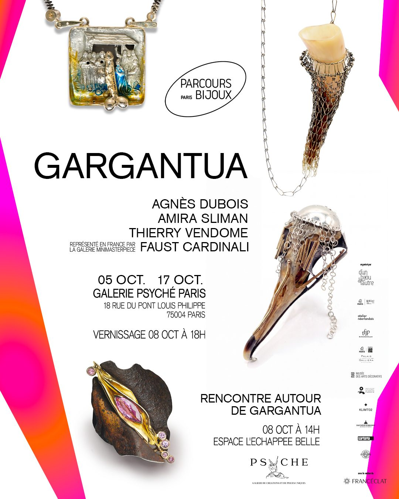
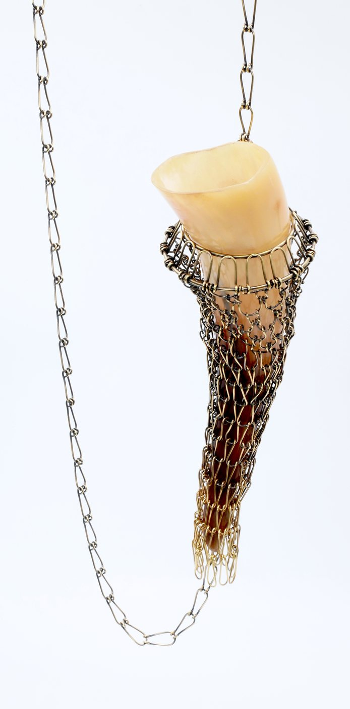
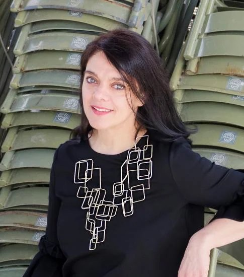
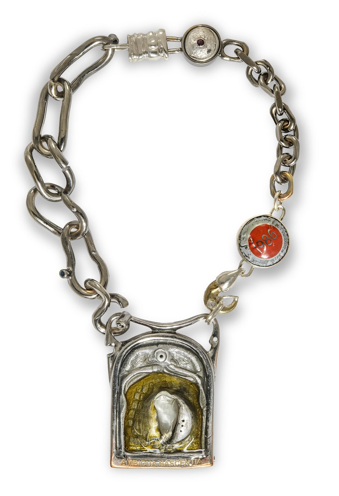
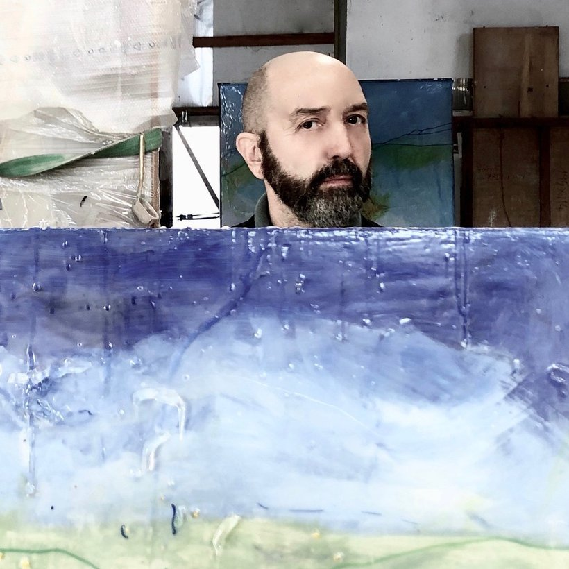
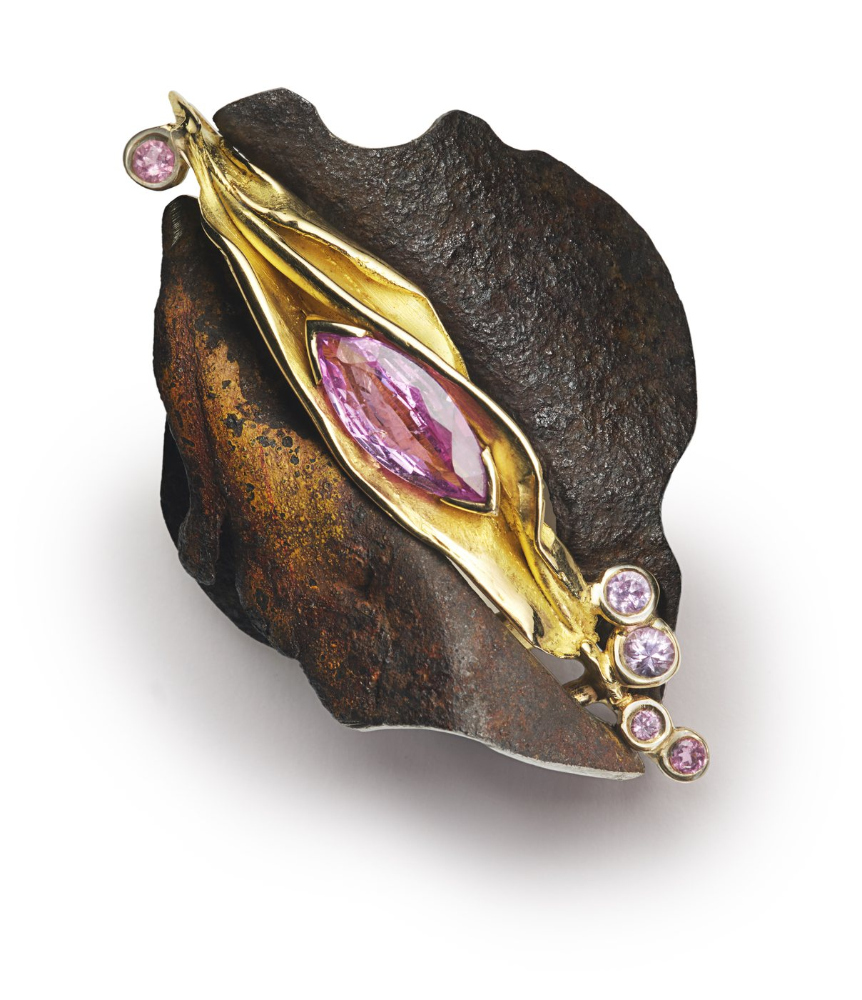
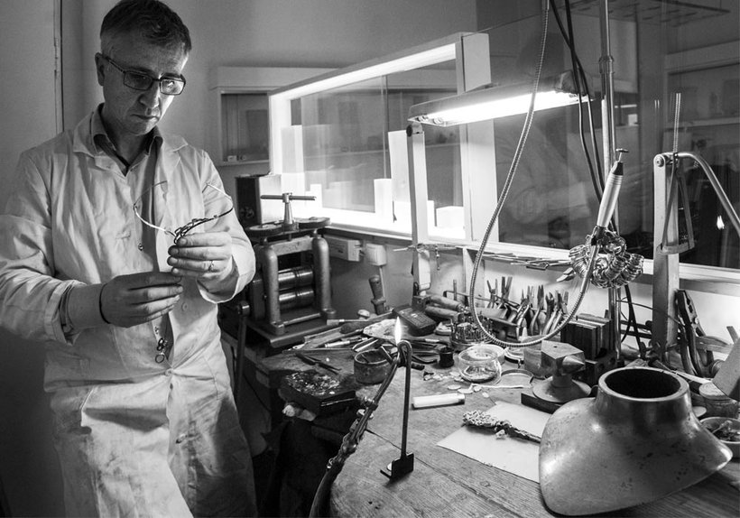
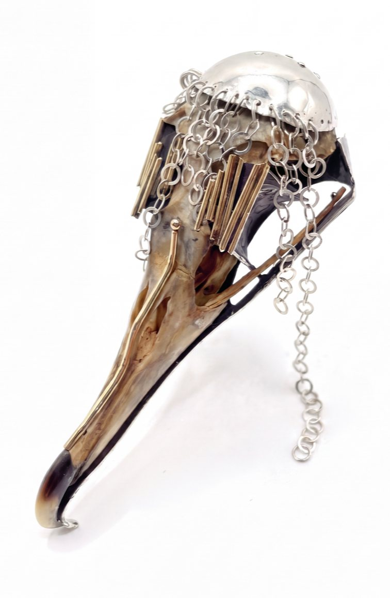
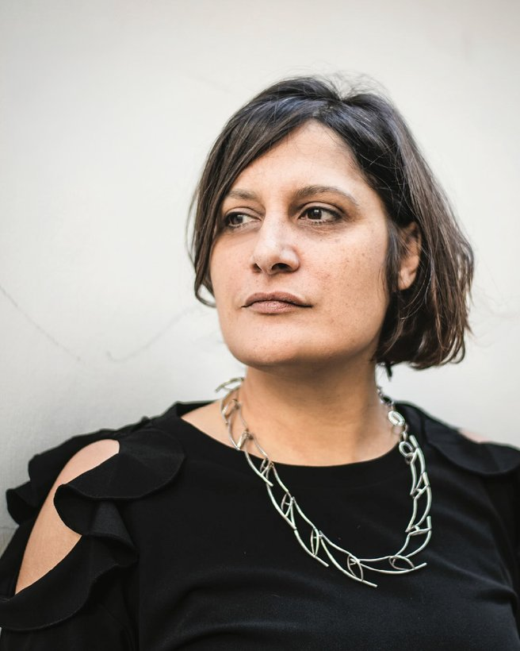

Parcours Bijoux Paris 2026
Gargantua.
Vous êtes invité(e)s.
Agnès Dubois, Faust Cardinali, Thierry Vendome, Amira Sliman
Gargantua fait partie de Parcours Bijoux, le rendez-vous parisien du bijou contemporain porté par l’association d’un bijou à l’autre depuis 2011.
Pour sa cinquième édition, du 1er au 31 octobre 2026, Parcours Bijoux réunit 33 expositions et plus de 200 artistes dans toute la ville : galeries, musées, écoles, centres culturels et ateliers d’artistes, d’une rive à l’autre. S’y ajoutent un colloque international, des performances et des rencontres.

Gargantua, au-delà du personnage truculent imaginé par Rabelais, incarne une figure hautement symbolique ancrée dans l’inconscient collectif français, qui dépasse son seul statut littéraire.
Dans l’œuvre de Rabelais, il illustre l’abondance, voire l’excès, la satire du pouvoir et la liberté intellectuelle en réaction aux dogmes.
Métaphore de la curiosité humaine, du désir et de la joie, autrement dit, de l’élan vital incarné, Gargantua s’inscrit dans une dimension intemporelle et universelle, tel un archétype culturel qui véhicule des valeurs hautement humanistes, porteuses d’un idéal de tolérance et de progrès.
À l’heure où notre monde traverse des mutations profondes, chacun de nous se voit confronté à la nécessité de faire des choix, de se repositionner. Cela soulève des questions essentielles : qu’est-ce qui nous définit en tant qu’êtres humains ?
Quatre artistes bijoutiers d’expressions et d’horizons différents, invitent le public à découvrir une exposition célébrant nos penchants gargantuesques et nos excès sous toutes leurs formes, à les examiner pour en extraire ce qui nous définit comme les porteurs de cet héritage humaniste, à les envisager comme une véritable ode à la vie.
Agnès Dubois
01 / 04
SILÈNES
Collier. Laiton patiné et corne. 2026.
Photo : Agnès Dubois
Voir en grand
Portrait : galerie bettina flament
Diplômée de l’AFEDAP en 2000
Après un parcours en Sciences Humaines et dans l’édition, j’ai choisi de me consacrer au bijou contemporain, me formant à l’AFEDAP Paris à la fin des années 1990. Créatrice indépendante depuis 2001, j’envisage le bijou comme un champ plastique à part entière, un médium à travers lequel j’interroge la relation entre le corps et le monde qui l’environne, entre le geste créatif et l’acte de porter.
Je conçois le bijou comme un marqueur identitaire, un vecteur de communication capable de signifier autant que de parer. Mes créations, souvent minimalistes, agissent comme révélateurs du corps dans sa présence sensible et se muent en sculptures habitées, en éléments de narration silencieuse.
L’équilibre, la sensorialité, la notion de plaisir, la cohérence entre espace corporel et extra-corporel nourrissent ma recherche formelle. J’explore l’art du lien : celui entre l’objet et le mouvement, le geste et l’émotion, entre l’artiste (moi-même) et la personne qui s’approprie l’objet.
Mon travail est régulièrement présenté dans des galeries dédiées au bijou contemporain, à Paris et en région, et je participe depuis plus de vingt ans à des événements liés aux métiers d’art. J’ai pris part au festival Parcours Bijoux, notamment en 2020 et 2023, en tant que porteuse de projets collectifs.
Faust Cardinali
02 / 04
AMBIGUA NASCENTIA
Pendentif-collier. Gargantua 2026.
Photo : Alessandro Schinco
Voir en grand
Né à Paris en 1961. Artiste pluridisciplinaire, je me forme en tant que sculpteur, peintre et orfèvre.
Mon travail allie dessin et écriture dans une réflexion artistique qui explore la « plastification poétique » de la société, matérialisant un temps à la fois archéologique et « futurible ».
Mes œuvres incarnent simultanément la mémoire du passé, la présence du présent et une vision du futur, dans une seule et même expression plastique et conceptuelle.
J’utilise des matériaux hétérogènes : polychlorure de vinyle, polyester, métaux précieux. Ces éléments, en apparence éloignés, se fondent pour dépasser les frontières entre peinture, sculpture et orfèvrerie : des disciplines autonomes mais profondément complémentaires.
Mes créations traduisent la liquidité du monde contemporain, marquée par les blessures historiques, psychologiques et géologiques, révélant de nouvelles formes de « polycorps » : une conception de l’art non pas in situ, mais in tempore.
Mes œuvres figurent dans d’importantes collections en Europe et en Asie.
Représenté en France par la Galerie MiniMasterpiece.
Thierry Vendome
03 / 04
LE PASSAGE
Corolle de rouille, saphir rose (3,66 ct), saphirs roses, or jaune plissé.
Photo : @olivierfoulonstudio
Voir en grand
Portrait : The French Jewelry Post, « Dans la famille Vendome, Thierry le fils »
MES BIJOUX SONT DES ACTES POÉTIQUES
Je ne cherche pas tant à représenter le visible qu’à exprimer des émotions qui me sont inspirées par ma vision du monde. C’est pourquoi je suis fasciné par les matières « vivantes » chargées d’un passé qu’il me plaît de transformer. Fragments d’éclats d’obus, clous rouillés, fils de fer barbelé, minéraux…
Je les dévie de leur trajectoire. Je les fais entrer dans une nouvelle histoire. La trace visible et irréversible de leur passé sur leur surface devient mon matériau de création. Je les choisis toujours pour une dimension physique, sensorielle et émotionnelle inédite. Un grain, une forme, une couleur.
Ces matières empreintes de leur propre histoire m’inspirent de nouveaux dialogues possibles entre présent et passé, entre mémoire et futur, entre formes brutes et matières délicates. Je cherche à provoquer une expérience immédiate et humaine renvoyant chacun à sa part sensible. À son propre ressenti du vécu.
En portant mes bijoux, chacun devient sujet de l’expérience.
Amira Sliman
04 / 04
MOURIR POUR VIVRE
Broche. Os, or jaune, argent.
Voir en grand
Diplômée en Design Industriel de l’École des Beaux-Arts de Tunis et de l’AFEDAP (1997). En 2003, je fonde ma galerie de bijoux contemporains à Paris, que je dirige depuis.
Mon approche du bijou s’apparente à celle d’un architecte : je conçois mes pièces comme des « architectures à porter », aux lignes fluides, épurées et intemporelles.
Ma recherche artistique repose sur l’équilibre, entre les formes, les matières, les couleurs, et sur une quête de complémentarité.
La nature constitue ma principale source d’inspiration : structures végétales, ossatures, textures organiques nourrissent mon imaginaire. Je privilégie les matériaux naturels : pierres que je taille, bois, plumes….
Le bijou n’est pas un simple ornement ; il représente un lien du corps au monde, un objet porteur de sens. Ce lien est lui aussi une quête : celle de la reconnaissance de la place de l’individu dans un groupe.
Depuis quelques années, mes pièces uniques sont donc construites comme des chapitres de vie, ils racontent mon propre rapport au monde.